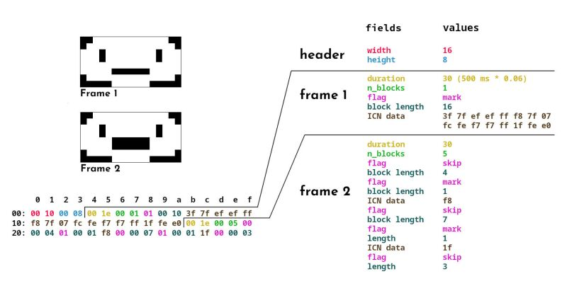
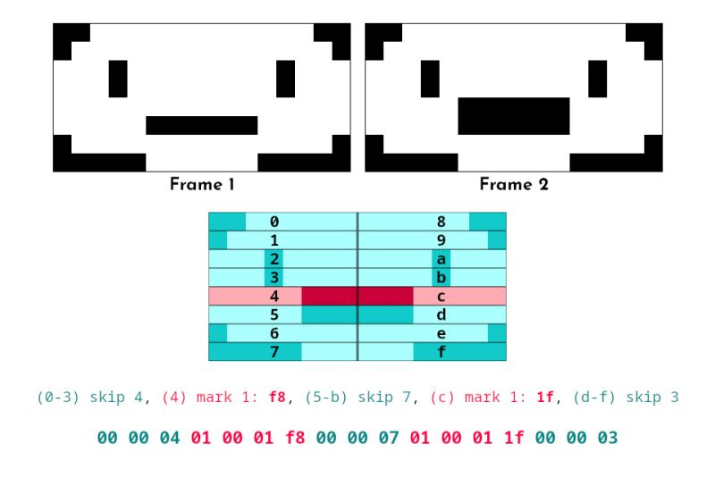

1ba file format

Visual explaination of the 1ba file format. Original idea by Corkami
The .1ba file format is used to store animations played in uxn-player. All numbers are stored MSB first.
Global header
The first four bytes of a .1ba file are reserved for the screen size:
- width (2 bytes)
- height (2 bytes)
Frame data
The file header is followed by a series of concatenated frame data. Each frame follows the scheme below:
Header
A 4-byte-long header storing the duration for which the frame should be displayed (2 bytes), and the number of blocks that stores the frame graphics (2 bytes).
- Duration for which to display the frame (number of milliseconds * 0.06) (2 bytes)
- Number of blocks for this frame (2 bytes)
Storing the duration this way might seems strange. This is because in the player rom, the subroutine attached to the screen vector is called 60 times each second. So mutiplying the duration by 0.06 gives us a counter to decrement each time the subroutine is called.
Skip/mark blocks

Graphics for each frame is ICN-encoded. To reduce the size of the file, we use transparency optimization: if a run of byte from the last frame didn't change, we encode them as a skip-block, which tells the player to skip this part of the screen when displaying the frame. On the other hand, bytes that have changed are stored in a mark-block.
These skip/mark blocks have the following structure:
- A flag indicating whether this is a mark block or a skip block (1 byte: 00 means skip, any other value means mark)
- The length to skip/mark (2 bytes)
The bytes that follow depend on the type of block:
- Skip block (flag == 00): the block ends here
- Mark block (flag != 00): the ICN-encoded graphics